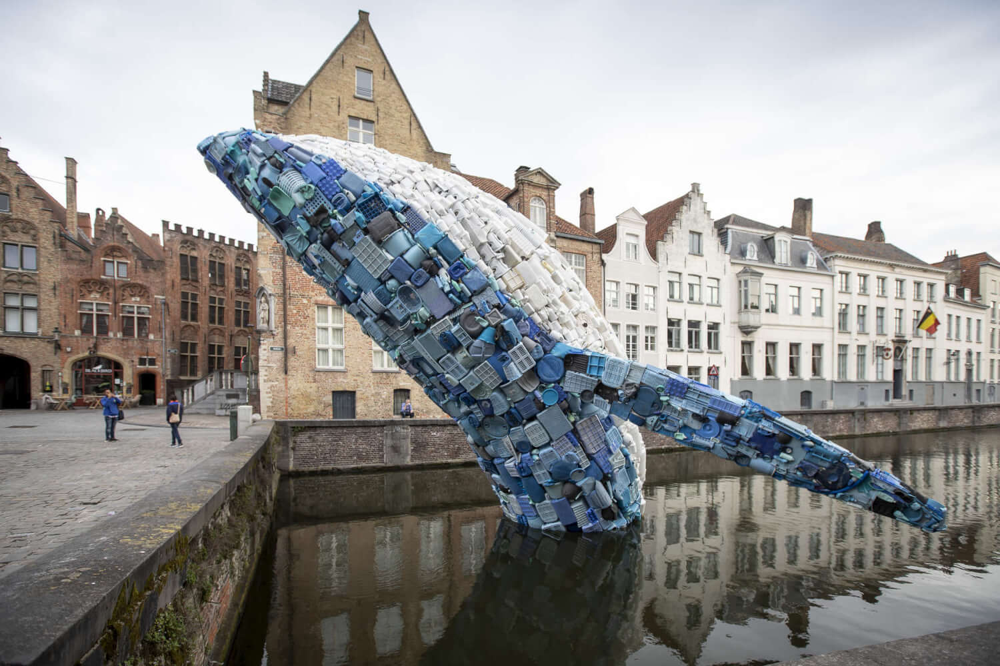

Lors de chaque nouvelle séquence d'art visuel, j'organise un rituel appelé "visite du musée" qui crée une expérience immersive d'exploration artistique pour les élèves.
Pendant la pause méridienne, je prépare des cartes d'œuvres d'art ou d'informations sur les artistes. Ensuite :
"Mon but est de les mettre en condition de travail tout en leur faisant intégrer les règles sociales réelles lorsqu'on visite un musée"

Chaque "musée" a un thème spécifique, comme le zéro déchet ou les autoportraits. Les élèves sont encouragés à analyser et catégoriser les œuvres de manière collaborative.
Ce rituel crée un environnement d'apprentissage engageant et interactif qui introduit l'appréciation de l'art de manière ludique et structurée.